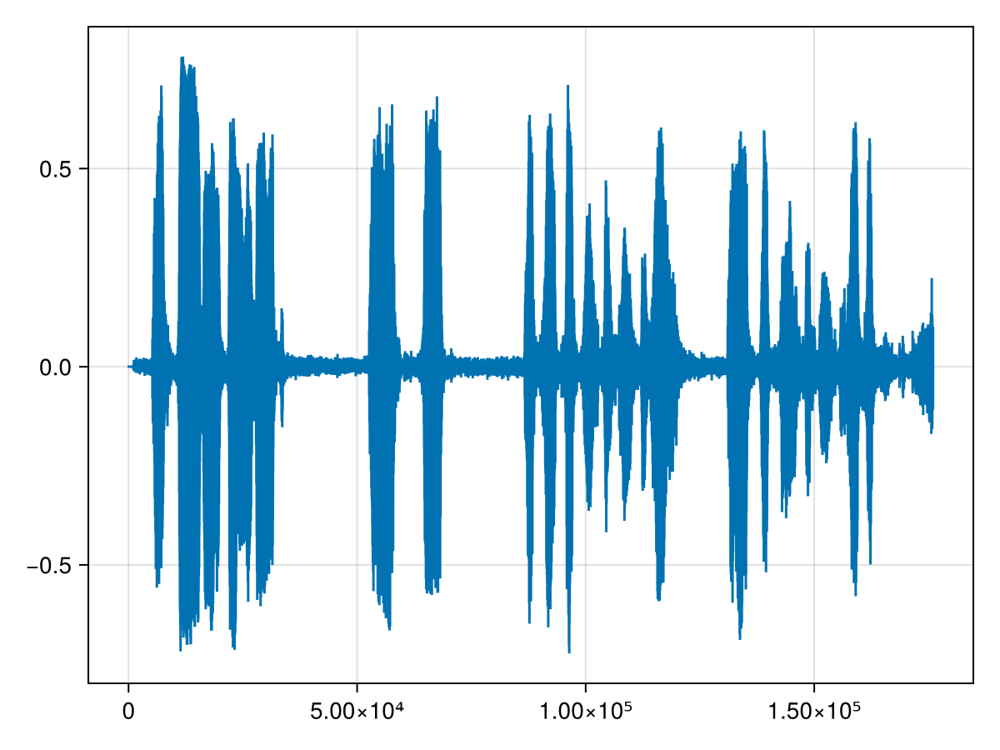
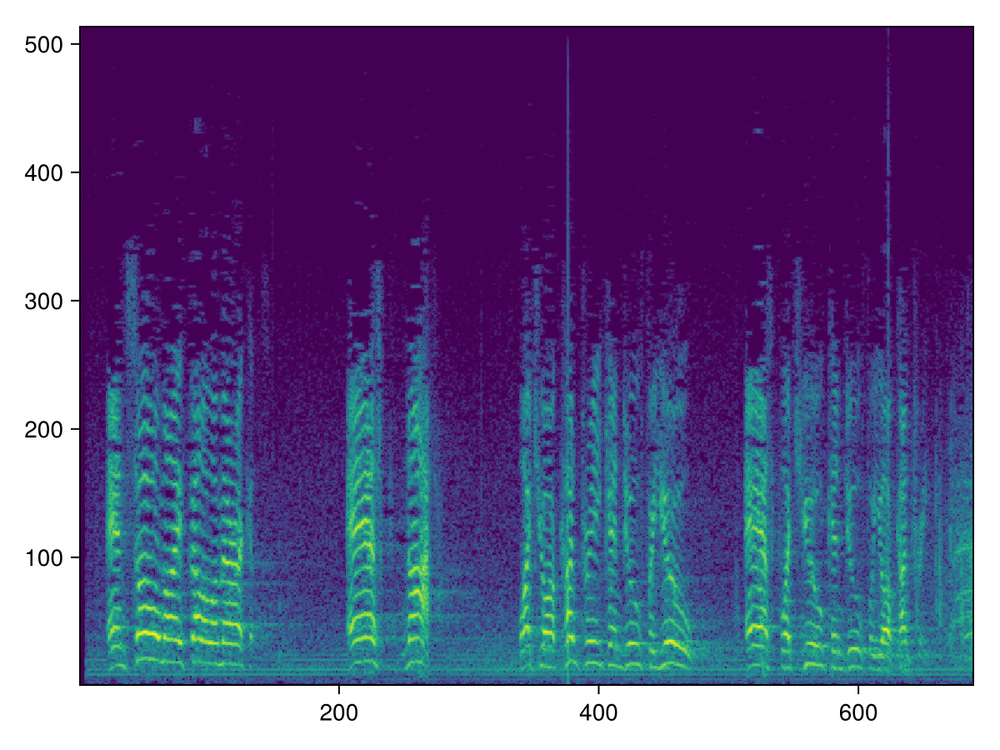
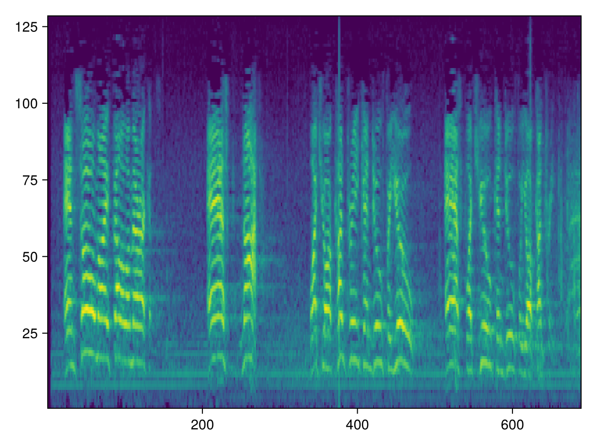

Reference
Spectral functions require importing FFTW package to enable them.
Window functions
NNlib.hann_window — Functionhann_window(
window_length::Int, ::Type{T} = Float32; periodic::Bool = true,
) where T <: RealHann window function (ref: https://en.wikipedia.org/wiki/Windowfunction#HannandHammingwindows).
$w[n] = \frac{1}{2}[1 - cos(\frac{2 \pi n}{N - 1})]$
Where $N$ is the window length.
julia> lineplot(hann_window(100); width=30, height=10)
┌──────────────────────────────┐
1 │⠀⠀⠀⠀⠀⠀⠀⠀⠀⠀⠀⠀⣠⠚⠉⠉⠉⠢⡀⠀⠀⠀⠀⠀⠀⠀⠀⠀⠀⠀│
│⠀⠀⠀⠀⠀⠀⠀⠀⠀⠀⠀⡔⠁⠀⠀⠀⠀⠀⠘⢄⠀⠀⠀⠀⠀⠀⠀⠀⠀⠀│
│⠀⠀⠀⠀⠀⠀⠀⠀⠀⢀⠞⠀⠀⠀⠀⠀⠀⠀⠀⠈⢆⠀⠀⠀⠀⠀⠀⠀⠀⠀│
│⠀⠀⠀⠀⠀⠀⠀⠀⢀⡎⠀⠀⠀⠀⠀⠀⠀⠀⠀⠀⠈⢣⠀⠀⠀⠀⠀⠀⠀⠀│
│⠀⠀⠀⠀⠀⠀⠀⠀⡎⠀⠀⠀⠀⠀⠀⠀⠀⠀⠀⠀⠀⠈⢦⠀⠀⠀⠀⠀⠀⠀│
│⠀⠀⠀⠀⠀⠀⢀⠞⠀⠀⠀⠀⠀⠀⠀⠀⠀⠀⠀⠀⠀⠀⠈⢆⠀⠀⠀⠀⠀⠀│
│⠀⠀⠀⠀⠀⢀⡜⠀⠀⠀⠀⠀⠀⠀⠀⠀⠀⠀⠀⠀⠀⠀⠀⠈⢇⠀⠀⠀⠀⠀│
│⠀⠀⠀⠀⢀⠎⠀⠀⠀⠀⠀⠀⠀⠀⠀⠀⠀⠀⠀⠀⠀⠀⠀⠀⠈⢦⠀⠀⠀⠀│
│⠀⠀⠀⢠⠊⠀⠀⠀⠀⠀⠀⠀⠀⠀⠀⠀⠀⠀⠀⠀⠀⠀⠀⠀⠀⠀⠣⡀⠀⠀│
0 │⣀⣀⠔⠁⠀⠀⠀⠀⠀⠀⠀⠀⠀⠀⠀⠀⠀⠀⠀⠀⠀⠀⠀⠀⠀⠀⠀⠙⢤⣀│
└──────────────────────────────┘
⠀0⠀⠀⠀⠀⠀⠀⠀⠀⠀⠀⠀⠀⠀⠀⠀⠀⠀⠀⠀⠀⠀⠀⠀⠀⠀⠀100⠀Arguments:
window_length::Int: Size of the window.::Type{T}: Elemet type of the window.
Keyword Arguments:
periodic::Bool: Iftrue(default), returns a window to be used as periodic function. Iffalse, return a symmetric window.Following always holds:
julia> N = 256;
julia> hann_window(N; periodic=true) ≈ hann_window(N + 1; periodic=false)[1:end - 1]
true
julia> hann_window(N) ≈ hamming_window(N; α=0.5f0, β=0.5f0)
trueReturns:
Vector of length window_length and eltype T.
NNlib.hamming_window — Functionhamming_window(
window_length::Int, ::Type{T} = Float32; periodic::Bool = true,
α::T = T(0.54), β::T = T(0.46),
) where T <: RealHamming window function (ref: https://en.wikipedia.org/wiki/Windowfunction#HannandHammingwindows). Generalized version of hann_window.
$w[n] = \alpha - \beta cos(\frac{2 \pi n}{N - 1})$
Where $N$ is the window length.
julia> lineplot(hamming_window(100); width=30, height=10)
┌──────────────────────────────┐
1 │⠀⠀⠀⠀⠀⠀⠀⠀⠀⠀⠀⠀⡠⠚⠉⠉⠉⠢⡄⠀⠀⠀⠀⠀⠀⠀⠀⠀⠀⠀│
│⠀⠀⠀⠀⠀⠀⠀⠀⠀⠀⢀⠎⠁⠀⠀⠀⠀⠀⠈⢢⠀⠀⠀⠀⠀⠀⠀⠀⠀⠀│
│⠀⠀⠀⠀⠀⠀⠀⠀⠀⢠⠊⠀⠀⠀⠀⠀⠀⠀⠀⠀⢣⡀⠀⠀⠀⠀⠀⠀⠀⠀│
│⠀⠀⠀⠀⠀⠀⠀⠀⢰⠃⠀⠀⠀⠀⠀⠀⠀⠀⠀⠀⠀⠱⡀⠀⠀⠀⠀⠀⠀⠀│
│⠀⠀⠀⠀⠀⠀⠀⣠⠃⠀⠀⠀⠀⠀⠀⠀⠀⠀⠀⠀⠀⠀⠳⡀⠀⠀⠀⠀⠀⠀│
│⠀⠀⠀⠀⠀⠀⢰⠁⠀⠀⠀⠀⠀⠀⠀⠀⠀⠀⠀⠀⠀⠀⠀⠱⡄⠀⠀⠀⠀⠀│
│⠀⠀⠀⠀⠀⡰⠃⠀⠀⠀⠀⠀⠀⠀⠀⠀⠀⠀⠀⠀⠀⠀⠀⠀⠱⡀⠀⠀⠀⠀│
│⠀⠀⠀⢀⠴⠁⠀⠀⠀⠀⠀⠀⠀⠀⠀⠀⠀⠀⠀⠀⠀⠀⠀⠀⠀⠘⢄⠀⠀⠀│
│⠀⢀⡠⠊⠀⠀⠀⠀⠀⠀⠀⠀⠀⠀⠀⠀⠀⠀⠀⠀⠀⠀⠀⠀⠀⠀⠀⠳⣀⠀│
0 │⠉⠉⠀⠀⠀⠀⠀⠀⠀⠀⠀⠀⠀⠀⠀⠀⠀⠀⠀⠀⠀⠀⠀⠀⠀⠀⠀⠀⠀⠉│
└──────────────────────────────┘
⠀0⠀⠀⠀⠀⠀⠀⠀⠀⠀⠀⠀⠀⠀⠀⠀⠀⠀⠀⠀⠀⠀⠀⠀⠀⠀⠀100⠀Arguments:
window_length::Int: Size of the window.::Type{T}: Elemet type of the window.
Keyword Arguments:
periodic::Bool: Iftrue(default), returns a window to be used as periodic function. Iffalse, return a symmetric window.Following always holds:
julia> N = 256;
julia> hamming_window(N; periodic=true) ≈ hamming_window(N + 1; periodic=false)[1:end - 1]
trueα::Real: Coefficient α in the equation above.β::Real: Coefficient β in the equation above.
Returns:
Vector of length window_length and eltype T.
Spectral
NNlib.stft — Functionstft(x;
n_fft::Int, hop_length::Int = n_fft ÷ 4, window = nothing,
center::Bool = true, normalized::Bool = false,
)Short-time Fourier transform (STFT).
The STFT computes the Fourier transform of short overlapping windows of the input, giving frequency components of the signal as they change over time.
$Y[\omega, m] = \sum_{k = 0}^{N - 1} \text{window}[k] \text{input}[m \times \text{hop length} + k] exp(-j \frac{2 \pi \omega k}{\text{n fft}})$
where $N$ is the window length, $\omega$ is the frequency $0 \le \omega < \text{n fft}$ and $m$ is the index of the sliding window.
Arguments:
x: Input, must be either a 1D time sequence ((L,)shape) or a 2D batch of time sequence ((L, B)shape).
Positional Arguments:
n_fft::Int: Size of Fourier transform.hop_length::Int: Distance between neighboring sliding window frames.window: Optional window function to apply. Must be 1D vector0 < length(window) ≤ n_fft. If window is shorter thann_fft, it is padded with zeros on both sides. Ifnothing(default), then no window is applied.center::Bool: Whether to pad input on both sides so that $t$-th frame is centered at time $t \times \text{hop length}$. Padding is done withpad_reflectfunction.normalized::Bool: Whether to return normalized STFT, i.e. multiplied with $\text{n fft}^{-0.5}$.
Returns:
Complex array of shape (n_fft, n_frames, B), where B is the optional batch dimension.
NNlib.istft — Functionistft(y;
n_fft::Int, hop_length::Int = n_fft ÷ 4, window = nothing,
center::Bool = true, normalized::Bool = false,
return_complex::Bool = false,
original_length::Union{Nothing, Int} = nothing,
)Inverse Short-time Fourier Transform.
Return the least squares estimation of the original signal
Arguments:
y: Input complex array in the(n_fft, n_frames, B)shape. WhereBis the optional batch dimension.
Positional Arguments:
n_fft::Int: Size of Fourier transform.hop_length::Int: Distance between neighboring sliding window frames.window: Window function that was applied to the input ofstft. Ifnothing(default), then no window was applied.center::Bool: Whether input tostftwas padded on both sides so that $t$-th frame is centered at time $t \times \text{hop length}$. Padding is done withpad_reflectfunction.normalized::Bool: Whether input tostftwas normalized.return_complex::Bool: Whether the output should be complex, or if the input should be assumed to derive from a real signal and window.original_length::Union{Nothing, Int}: Optional size of the first dimension of the input tostft. Helps restoring the exactstftinput size. Otherwise, the array might be a bit shorter.
NNlib.power_to_db — Functionpower_to_db(s; ref::Real = 1f0, amin::Real = 1f-10, top_db::Real = 80f0)Convert a power spectrogram (amplitude squared) to decibel (dB) units.
Arguments
s: Input power.ref: Scalar w.r.t. which the input is scaled.amin: Minimum threshold fors.top_db: Threshold the output attop_dbbelow the peak:max.(s_db, maximum(s_db) - top_db).
Returns
s_db ~= 10 * log10(s) - 10 * log10(ref)
NNlib.db_to_power — Functiondb_to_power(s_db; ref::Real = 1f0)Inverse of power_to_db.
Spectrogram
NNlib.melscale_filterbanks — Functionmelscale_filterbanks(;
n_freqs::Int, n_mels::Int, sample_rate::Int,
fmin::Float32 = 0f0, fmax::Float32 = Float32(sample_rate ÷ 2))Create triangular Mel scale filter banks (ref: https://en.wikipedia.org/wiki/Mel_scale). Each column is a filterbank that highlights its own frequency.
Arguments:
n_freqs::Int: Number of frequencies to highlight.n_mels::Int: Number of mel filterbanks.sample_rate::Int: Sample rate of the audio waveform.fmin::Float32: Minimum frequency in Hz.fmax::Float32: Maximum frequency in Hz.
Returns:
Filterbank matrix of shape (n_freqs, n_mels) where each column is a filterbank.
julia> n_mels = 8;
julia> fb = melscale_filterbanks(; n_freqs=200, n_mels, sample_rate=16000);
julia> plot = lineplot(fb[:, 1]);
julia> for i in 2:n_mels
lineplot!(plot, fb[:, i])
end
julia> plot
┌────────────────────────────────────────┐
1 │⠀⡀⢸⠀⢸⠀⠀⣧⠀⠀⢸⡄⠀⠀⠀⣷⠀⠀⠀⠀⠀⣷⠀⠀⠀⠀⠀⠀⢀⣿⡀⠀⠀⠀⠀⠀⠀⠀⠀⠀│
│⠀⡇⢸⡆⢸⡇⠀⣿⠀⠀⡜⡇⠀⠀⢰⠋⡆⠀⠀⠀⢰⠁⡇⠀⠀⠀⠀⠀⡸⠀⢣⠀⠀⠀⠀⠀⠀⠀⠀⠀│
│⠀⣿⢸⡇⡇⡇⢰⠹⡄⠀⡇⢱⠀⠀⢸⠀⢣⠀⠀⠀⡜⠀⢸⡀⠀⠀⠀⢀⠇⠀⠈⡇⠀⠀⠀⠀⠀⠀⠀⠀│
│⠀⣿⡇⡇⡇⡇⢸⠀⡇⢀⠇⠸⡀⠀⡇⠀⠸⡀⠀⢀⠇⠀⠀⢇⠀⠀⠀⡸⠀⠀⠀⠸⡄⠀⠀⠀⠀⠀⠀⠀│
│⢠⢻⡇⡇⡇⢱⢸⠀⢇⢸⠀⠀⡇⢀⠇⠀⠀⡇⠀⢸⠀⠀⠀⠸⡀⠀⢠⠇⠀⠀⠀⠀⢱⠀⠀⠀⠀⠀⠀⠀│
│⢸⢸⡇⢱⡇⢸⡇⠀⢸⢸⠀⠀⢣⢸⠀⠀⠀⢸⠀⡇⠀⠀⠀⠀⢇⠀⡜⠀⠀⠀⠀⠀⠈⢇⠀⠀⠀⠀⠀⠀│
│⢸⢸⡇⢸⠀⢸⡇⠀⢸⡇⠀⠀⢸⡎⠀⠀⠀⠈⣶⠁⠀⠀⠀⠀⠸⣤⠃⠀⠀⠀⠀⠀⠀⠘⡆⠀⠀⠀⠀⠀│
│⢸⠀⡇⢸⠀⠀⡇⠀⠀⡇⠀⠀⠀⡇⠀⠀⠀⠀⣿⠀⠀⠀⠀⠀⠀⣿⠀⠀⠀⠀⠀⠀⠀⠀⢱⡀⠀⠀⠀⠀│
│⢸⢸⡇⢸⠀⢸⡇⠀⢸⡇⠀⠀⢸⢇⠀⠀⠀⢀⠿⡀⠀⠀⠀⠀⢰⠛⡄⠀⠀⠀⠀⠀⠀⠀⠀⢣⠀⠀⠀⠀│
│⢸⢸⡇⡸⡇⢸⡇⠀⢸⢸⠀⠀⡜⢸⠀⠀⠀⢸⠀⡇⠀⠀⠀⠀⡎⠀⢣⠀⠀⠀⠀⠀⠀⠀⠀⠘⡆⠀⠀⠀│
│⢸⢸⡇⡇⡇⡸⢸⠀⡎⢸⠀⠀⡇⠈⡆⠀⠀⡇⠀⢸⠀⠀⠀⢰⠁⠀⠘⡆⠀⠀⠀⠀⠀⠀⠀⠀⠸⡄⠀⠀│
│⡇⢸⡇⡇⡇⡇⢸⠀⡇⠈⡆⢰⠁⠀⡇⠀⢰⠁⠀⠈⡆⠀⠀⡎⠀⠀⠀⢱⠀⠀⠀⠀⠀⠀⠀⠀⠀⢣⠀⠀│
│⡇⢸⢸⡇⡇⡇⠸⣰⠃⠀⡇⡸⠀⠀⢸⠀⡜⠀⠀⠀⢣⠀⢸⠁⠀⠀⠀⠈⡆⠀⠀⠀⠀⠀⠀⠀⠀⠈⢇⠀│
│⡇⡇⢸⠇⢸⡇⠀⣿⠀⠀⢣⡇⠀⠀⠸⣄⠇⠀⠀⠀⠸⡀⡇⠀⠀⠀⠀⠀⢱⠀⠀⠀⠀⠀⠀⠀⠀⠀⠸⡄│
0 │⣇⣇⣸⣀⣸⣀⣀⣟⣀⣀⣸⣃⣀⣀⣀⣿⣀⣀⣀⣀⣀⣿⣀⣀⣀⣀⣀⣀⣈⣇⣀⣀⣀⣀⣀⣀⣀⣀⣀⣱│
└────────────────────────────────────────┘
⠀0⠀⠀⠀⠀⠀⠀⠀⠀⠀⠀⠀⠀⠀⠀⠀⠀⠀⠀⠀⠀⠀⠀⠀⠀⠀⠀⠀⠀⠀⠀⠀⠀⠀⠀⠀⠀200⠀NNlib.spectrogram — Functionspectrogram(waveform;
pad::Int = 0, n_fft::Int, hop_length::Int, window,
center::Bool = true, power::Real = 2.0,
normalized::Bool = false, window_normalized::Bool = false,
)Create a spectrogram or a batch of spectrograms from a raw audio signal.
Arguments
pad::Int: Then amount of padding to apply on both sides.window_normalized::Bool: Whether to normalize the waveform by the window’s L2 energy.power::Real: Exponent for the magnitude spectrogram (must be ≥ 0) e.g.,1for magnitude,2for power, etc. If0, complex spectrum is returned instead.
See stft for other arguments.
Returns
Spectrogram in the shape (T, F, B), where T is the number of window hops and F = n_fft ÷ 2 + 1.
Example:
using FFTW # <- required for STFT support.
using NNlib
using FileIO
using Makie, CairoMakie
CairoMakie.activate!()
waveform, sampling_rate = load("./assets/jfk.flac")
fig = lines(reshape(waveform, :))
save("waveform.png", fig)
# Spectrogram.
n_fft = 1024
spec = spectrogram(waveform; n_fft, hop_length=n_fft ÷ 4, window=hann_window(n_fft))
fig = heatmap(transpose(NNlib.power_to_db(spec)[:, :, 1]))
save("spectrogram.png", fig)
# Mel-scale spectrogram.
n_freqs = n_fft ÷ 2 + 1
fb = melscale_filterbanks(; n_freqs, n_mels=128, sample_rate=Int(sampling_rate))
mel_spec = permutedims(spec, (2, 1, 3)) ⊠ fb # (time, n_mels)
fig = heatmap(NNlib.power_to_db(mel_spec)[:, :, 1])
save("mel-spectrogram.png", fig)| Waveform | Spectrogram | Mel Spectrogram |
|---|---|---|
|  |  |  |